Asuka Langley Soryu
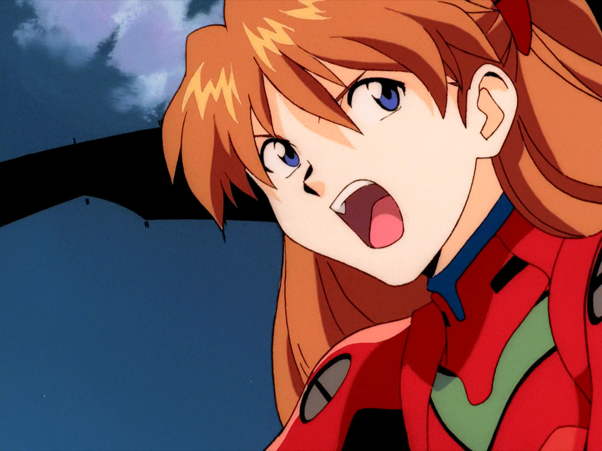
My favorite character. The Second Child and Pilot of
Evangelion Unit-02. Nerv's highly trained pilot
ace, she is none too pleased at being upstaged by
Shinji, but is still drawn to him despite herself.
Her independent and
hot-tempered personality masks some old and painful
wounds. Her rebuild
counterpart Asuka Shikinami Langley is
treated as a separate character below.
While adapted from Asuka Langley Soryu of the original
series, her
Japanese surname is different, and her characterization
diverges in highly significant ways over the
course of the New Theatrical Edition movies.
Shinji Ikari
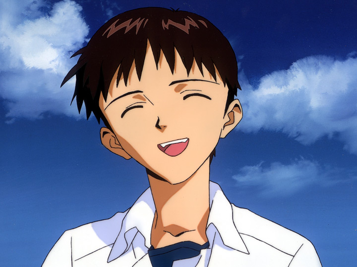
The central protagonist of Evangelion, and the main pilot
of Evangelion Unit-01. Defeating the
Angel's and saving the world are the least of Shinji's
worries as he struggles to overcome his own
inner demons.
Kozo Fuyutsuki
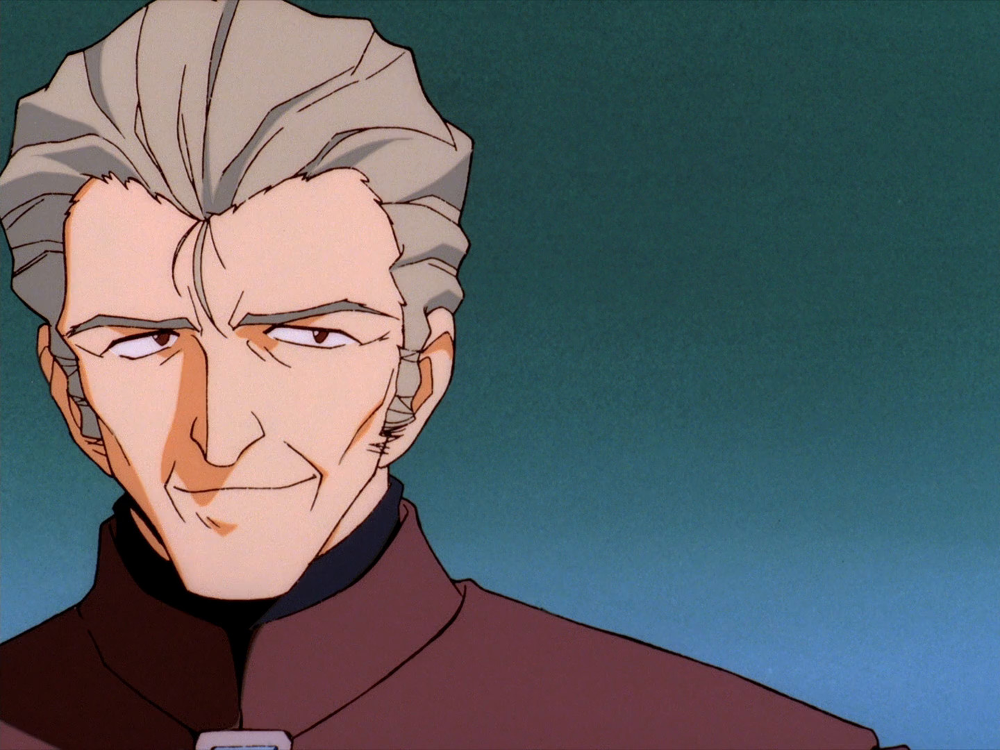
Vice Commander of Nerv and Gendo's right hand. Fuyutsuki
was formerly a professor of metaphysical
biology, and was part of the UN investigation into
Second Impact. Though he once tried to reveal the
truth to
the world, he now works alongside Gendo as the two work
tow
Gendo Ikari
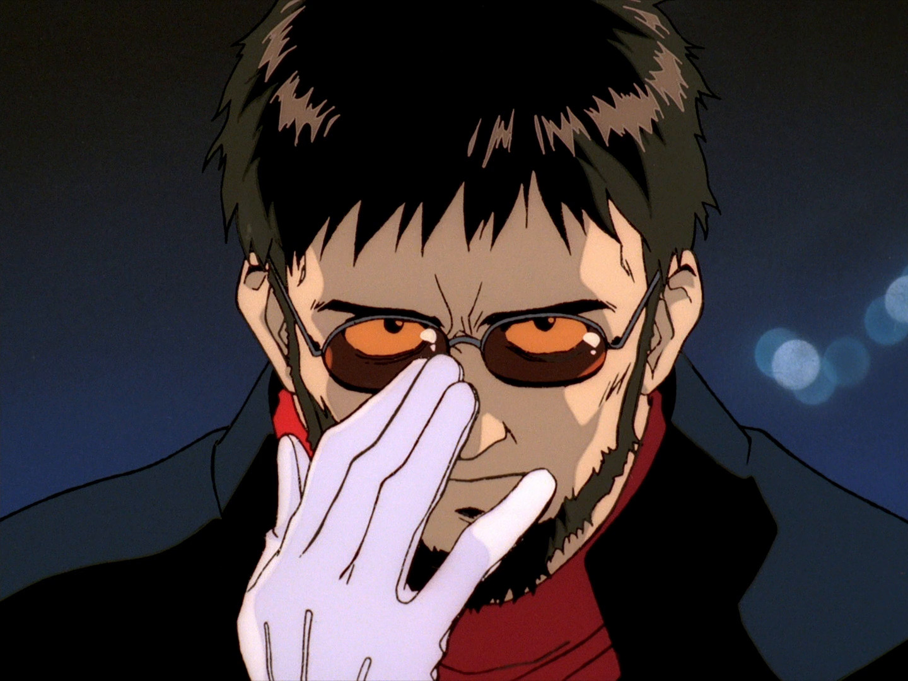
Commander of Nerv and Shinji's estranged father. Gendo
Ikari has been given extra-legal authority by
the UN to defeat the Angels by any means neccessary; and
he has yet more powerful benefactors with
their own, darker goals in mind. But it is his own,
personal goal of reuniting with Yui which he
will stop at nothing to achieve.
Kaworu Nagisa
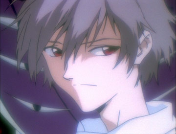
The Fifth Child... and the Final Angel. Kaworu is sent to
Tokyo-3 by Seele to foil Commander Ikari's
plans, but along the way takes more than a passing interest in
Shinji. The Angel of Free Will, he chooses
to make the ultimate expression of his idiom.
Kensuke Aida
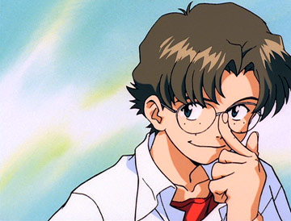
Unrivaled Otaku of Class 2-A's and Shinji's friend.
Kensuke is Evangelion—mad, and always seems to
know more than he really should. He plays an important
role in the movie Final.
Mari Makinami Illustrious
A character from the Rebuild of Evangelion movie series. She is an Evangelion pilot and third party
operative introduced in Evangelion: 2.0 You Can (Not) Advance.
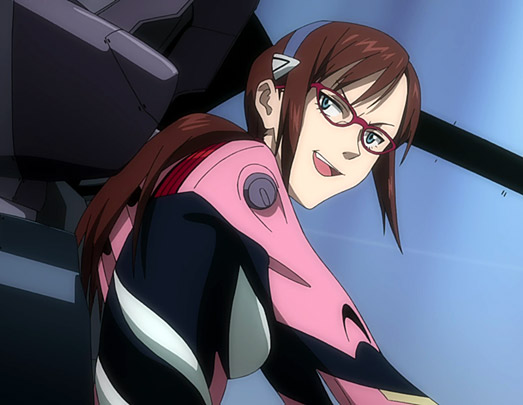
Misato Katsuragi
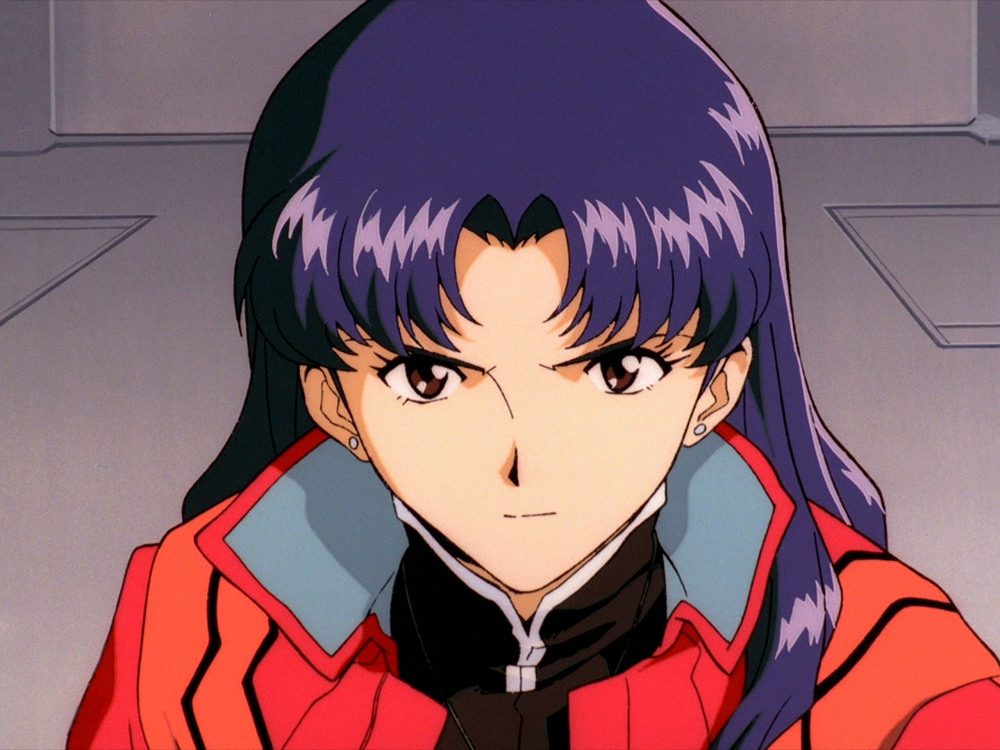
Nerv's Chief of Tactical Operations and Shinji's self
appointed guardian. Misato weighs her private
concerns against her professional duty as she works to defeat the
Angels and discover the secrets behind Second
Impact and Tokyo-3.
Rei Ayanami
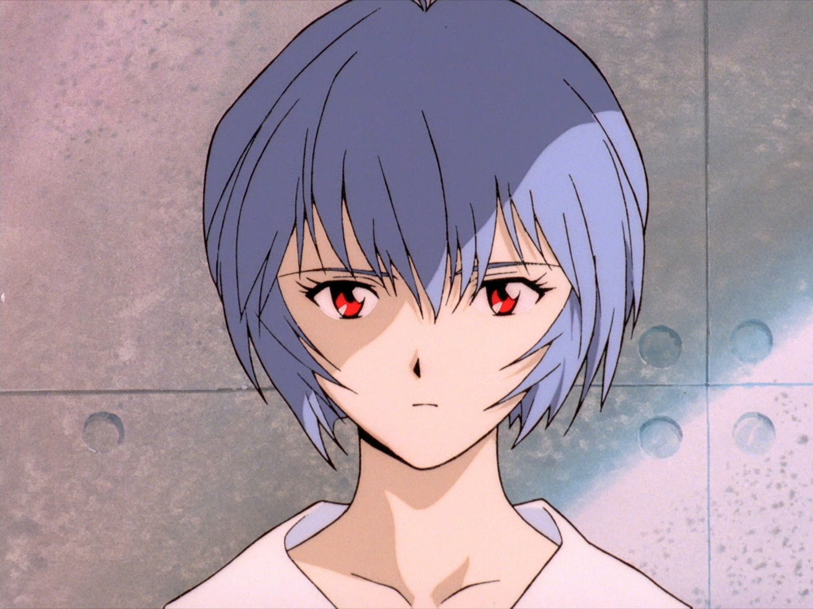
The First Child and Pilot of Evangelion Unit-00. Rei's quiet
speech and ethereal appearance belie her
greater nature, and purpose. Her connections to Shinji, Unit-01, and
Commander Ikari are deeper and darker than
they seem.
Ritsuko Akagi
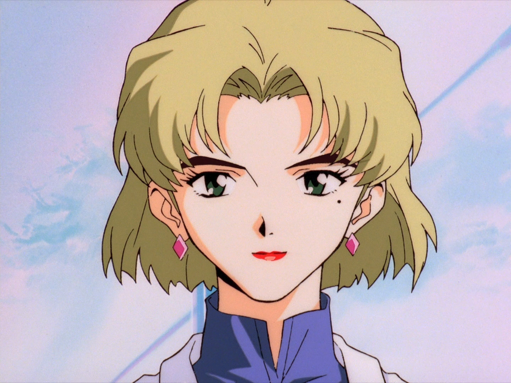
The Head of Project E and Nerv's chief scientist, Dr Akagi
employs the world's most advanced technology
to keep the Evangelions' enormous power restrained; barely.
Ritsuko is Misato's oldest and closest friend,
but she is deeper in the Commander's confidences—and more
besides.
Ryoji Kaji
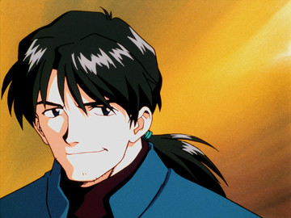
Tokyo-3's most dashing triple agent, and an old flame of
Misato. Kaji runs a dangerous game of lies,
playing
Nerv, Seele and the Japanese Intelligence Ministry against
each other; and all while trying to discover
the
real truth for himself.
Toji Suzuhara
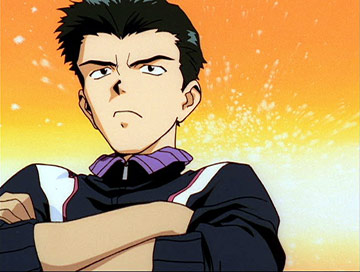
Class 2-A's resident jock and Shinji's close friend—after a
rocky start. But underneath Toji's tough
exterior lies a heart of gold.
Yui Ikari
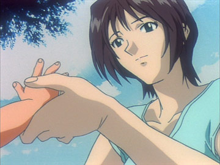
Shinji's mother and Commander Ikari's lost wife. Yui's body
is lost to this world, but she lives on
inside the core of EVA-01.